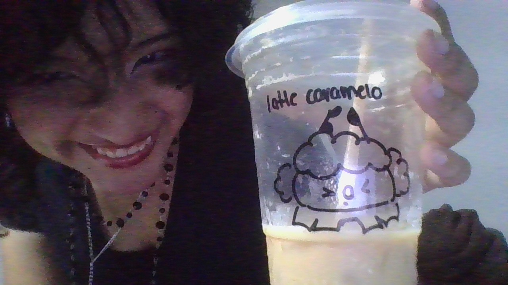

Sobre mi
Hola! Soy Nahomi Figueroa, tecnico en programación y estudiante de ingenieria en software en ITSON, actualmente cursando mi 5to semestre. Enfocada en el desarrollo fullstack.

Habilidades
Tecnologías y areas de dominio:
HTML, CSS. JS, PHP, Java
Patrones de diseño, dominio de principios SOLID y GRASP.
Softskills
- Facilidad al hablar en publico.
- Trabajo en equipo.
- Liderazgo
- Comunicación
Formación
Areas de interes:
- Desarrollo web
- Cyber seguridad
- Diseño de sistemas interactivos
- Analisis de datos
- Desarrollo web
- Cyber seguridad
- Diseño de sistemas interactivos
- Analisis de datos
Lista ordenada y desordenada:
- Frontend:
- HTML
- CSS
- JS
- Backend:
- Java
- PHP
- SQL
Proyectos
| Nombre | Descripción | Tipo de experiencia | Fecha |
| Artes37 | Colectivo de artes del cual fuí lider por dos años consecutivos, demostrando mi capacidad de liderazgo, organización, trabajo en equipo y resolucón de problemas | Academica | 2023-2024 |
| LSM Para todos | Proyecto desarrollado y diseñado enteramente por mi para el XXVI concurso de prototipos y proyectos de emprendimiento con el fin de enseñar LSM de una manera accesible. | Academica | 2024-2025 |
| Patrones Hermosos | Proyecto impulsado por ITSON, Tecnologico de Monterrey y el MIT. Campamento dedicado a las STEM con un enfoque de promoción en niñas para una inclusón en el area. Siendo mentora de este campamento mi habilidad al hablar en publico impactó positivamente a las asistentes del campamento | Voluntariado, academico | 2025-Actualidad |
| Technnovation girls | Competencia a nivel mundial especificamente para niñas. Siendo mentora de dos equipos semifinalistas se demostró un gran aprendizaje por parte de las participantes gracias al equipo de mentoras del que fuí participe | Voluntariado | 2025-Actualidad |
| Swap App | Proyecto para dispositivos moviles en desarrollo para la promoción de una economía circular, cumpliendo los objetivos de desarrollo sustentable. Soy participe del equipo de desarrollo | Laboral | 2025-Actualidad |
| Ayudantías CITIEC | Programa destinado a estudiantes cuyas actividades de soporte son remuneradas economicamente, ofreciendo experiencia en un ambiente laboral real | Laboral | 2026-Actualidad |